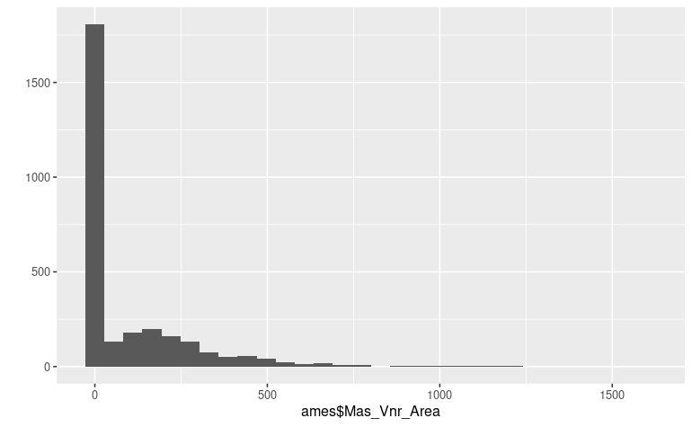
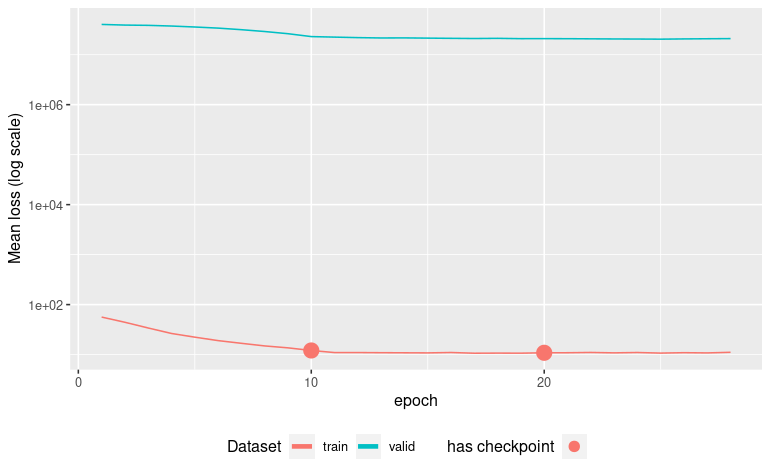
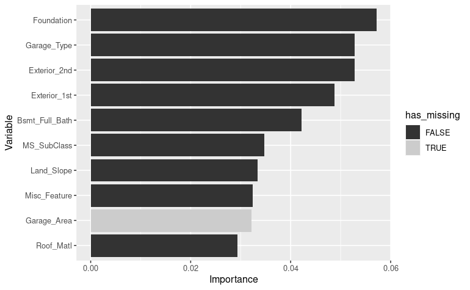

Training a Tabnet model from missing-values dataset
Christophe Regouby
2024-07-29
Source:vignettes/Missing_data_predictors.Rmd
Missing_data_predictors.RmdMotivation
Real-life training dataset usually contains missing data. The vast majority of deep-learning networks do not handle missing data and thus either stop or crash when values are missing in the predictors.
But Tabnet use a masking mechanism that we can reuse to cover the missing data in the training set.
As we enter the world of missing-data, we have to question the type
of missing-data we deal with. We could have missing data at random
(MAR), like for example some transmission errors on a sensor data
dataset, or missing not at random (MNAR) when some interactions exists
between the missing data and other predictors values for the same
sample. The later is a more complex topic to cover, and we will try to
investigate it here through the ames dataset.
Missing-data dataset creation
Ames missings understanding
The ames dataset from modeldata contains
a lot of null values that the human analysis clearly understand
as an implicit “missing object” described by that value. We
have for example pool surface of 0 square meters means “no pool”,
basement surface of 0 square meters means “no basement”, …
Many of those variables can be detected visually by inspecting the
distribution of the values like, for example, the
Masonry veneer area predictor :
library(tidymodels, quietly = TRUE)
library(tabnet)
data("ames", package = "modeldata")
qplot(ames$Mas_Vnr_Area) We know that it will be extremely difficult for a model to capture an internal representation of such distribution, and thus we want to avoid the null values to penalize the model internal representation.
While keeping some room for freedom
Many of those variables come as a pair in the ames
dataset, one for the qualitative aspect, the other for the quantitative
aspect. We have for example Pool_QC for pool condition,
that has a “no_pool” level with Pool_Area=0 in that
case.
As human, we have the intuition that knowing if a pool is present is
important for the modeling task. So we want the model to get an internal
representation of the implicit has_pool=FALSE without
having it explicit in the dataset. In order to do so, we have to let the
model some freedom to infer the “no_pool” state and thus we should not
mutate both variables in the pair Pool_Area=NA and
Pool_QC=NA at the same time.
Ames with missing data
Let’s turn those missing objects data explicitly into
NAs in an new ames_missing dataset :
A quick and dirty way to achieve this on numerical predictors is to
na_if() zeros on any column which name is related to
surface and area.
Then, according to the keep room for freedom rule, do it carefully on
the matching categorical predictors
col_with_zero_as_na <- ames %>%
select(where(is.numeric)) %>%
select(matches("_SF|Area|Misc_Val|[Pp]orch$")) %>%
summarise_each(min) %>%
select_if(~.x==0) %>%
names()
ames_missing <- ames %>% mutate_at(col_with_zero_as_na, na_if, 0) %>%
mutate_at("Alley", na_if, "No_Alley_Access") %>%
mutate_at("Fence", na_if, "No_Fence") %>%
mutate_at(c("Garage_Cond", "Garage_Finish"), na_if, "No_Garage") %>%
mutate_at(c("Bsmt_Exposure", "BsmtFin_Type_1", "BsmtFin_Type_2"), na_if, "No_Basement")
visdat::vis_miss(ames_missing)
We can see here that variable are not missing at random, and thus we can expect the model to capture the missingness relation during the pretraining phase.
Note: A better way to achieve proper value mutation to explicit NAs
would be to also check if the qualitative column in the pair refers to
none or to zero occurrence of the equipment. But this is
beyond the scope of this vignette.
Model pretraining
Let’s pretrain one model for each of those dataset, and analyze variable importance that emerge after the unsupervised representation learning step:
Variable importance with raw ames dataset
ames_rec <- recipe(Sale_Price ~ ., data=ames) %>%
step_normalize(all_numeric())
cat_emb_dim <- map_dbl(ames %>% select_if(is.factor), ~log2(nlevels(.x)) %>% round)
ames_pretrain <- tabnet_pretrain(ames_rec, data=ames, epoch=50, cat_emb_dim = cat_emb_dim,
valid_split = 0.2, verbose=TRUE, batch=2930,
early_stopping_patience = 3L, early_stopping_tolerance = 1e-4)
autoplot(ames_pretrain)[Epoch 001] Loss: 43.708794 Valid loss: 8066126.500000
[Epoch 002] Loss: 31.463089 Valid loss: 5631984.000000
[Epoch 003] Loss: 23.396217 Valid loss: 3901085.500000
[Epoch 004] Loss: 19.241619 Valid loss: 2947481.750000
[Epoch 005] Loss: 15.032537 Valid loss: 2250338.000000
[Epoch 006] Loss: 12.991020 Valid loss: 1815583.125000
[Epoch 007] Loss: 11.044646 Valid loss: 1533597.875000
[Epoch 008] Loss: 9.114124 Valid loss: 1395840.000000
[Epoch 009] Loss: 8.362211 Valid loss: 1258169.375000
[Epoch 010] Loss: 7.549719 Valid loss: 1064599.500000
[Epoch 011] Loss: 6.808529 Valid loss: 998335.625000
[Epoch 012] Loss: 6.569450 Valid loss: 1047418.500000
[Epoch 013] Loss: 6.606429 Valid loss: 1048583.625000
[Epoch 014] Loss: 6.742617 Valid loss: 993241.312500
[Epoch 015] Loss: 6.806847 Valid loss: 995705.875000
[Epoch 016] Loss: 6.618536 Valid loss: 1026789.625000
[Epoch 017] Loss: 6.593469 Valid loss: 1033726.437500
Early stopping at epoch 017
Now we capture the columns with missings, and create a convenience
function to color the vip::vip() plot output according to
the missingness quality of the column
col_with_missings <- ames_missing %>%
summarise_all(~sum(is.na(.))>0) %>%
t %>% enframe(name="Variable") %>%
rename(has_missing="value")
vip_color <- function(object, col_has_missing) {
vip_data <- vip::vip(object)$data %>% arrange(Importance)
vis_miss_plus <- left_join(vip_data, col_has_missing , by="Variable") %>%
mutate(Variable=factor(Variable, levels = vip_data$Variable))
vis_miss_plus
ggplot(vis_miss_plus, aes(x=Variable, y=Importance, fill=has_missing)) +
geom_col() + coord_flip() + scale_fill_grey()
}
vip_color(ames_pretrain, col_with_missings)
We get BsmtFin_Type_1, BsmtFin_SF_1 and
Bsmt_Exposure variables in the top ten important variables
according to this run of pretraining the model. Those variables has been
screened as having few missing values.
Note that this result varies a lot from run to run. The captured result here depends a lot on your initialization conditions.
Variable importance with ames_missing dataset
Let’s pretrain a new model with the same hyperparameter, but now
using the ames_missing dataset.
In order to compensate the 13% missingness already present in the
ames_missing dataset, we adjust the
pretraining_ratio parameter to
0.5 - 0.13 = 0.37
ames_missing_rec <- recipe(Sale_Price ~ ., data=ames_missing) %>%
step_normalize(all_numeric())
ames_missing_pretrain <- tabnet_pretrain(ames_missing_rec, data=ames_missing, epoch=50,
cat_emb_dim = cat_emb_dim,
valid_split = 0.2, verbose=TRUE, batch=2930,
pretraining_ratio=0.37,
early_stopping_patience = 3L, early_stopping_tolerance = 1e-4)
autoplot(ames_missing_pretrain)
vip_color(ames_missing_pretrain, col_with_missings)[Epoch 001] Loss: 56.250610 Valid loss: 40321308.000000
[Epoch 002] Loss: 44.254524 Valid loss: 39138240.000000
[Epoch 003] Loss: 33.992207 Valid loss: 38648800.000000
[Epoch 004] Loss: 26.421488 Valid loss: 37445656.000000
[Epoch 005] Loss: 22.290133 Valid loss: 35814052.000000
...
[Epoch 021] Loss: 10.877335 Valid loss: 20903176.000000
[Epoch 022] Loss: 11.023649 Valid loss: 20772972.000000
[Epoch 023] Loss: 10.819239 Valid loss: 20642806.000000
[Epoch 024] Loss: 10.994371 Valid loss: 20575458.000000
[Epoch 025] Loss: 10.700000 Valid loss: 20449918.000000
[Epoch 026] Loss: 10.902529 Valid loss: 20680102.000000
[Epoch 027] Loss: 10.791571 Valid loss: 20849496.000000
[Epoch 028] Loss: 11.102308 Valid loss: 20995910.000000
Early stopping at epoch 028
We can see here no variables with high missingness is present in the top 10 important variables. This seems to be a good sign of the model having captured proper interactions between variables.
Model training
Variable importance with raw ames dataset
ames_fit <- tabnet_pretrain(ames_rec, data=ames, tabnet_model = ames_pretrain,
epoch=50, cat_emb_dim = cat_emb_dim,
valid_split = 0.2, verbose=TRUE, batch=2930,
early_stopping_patience = 5L, early_stopping_tolerance = 1e-4)
autoplot(ames_fit)
vip_color(ames_fit, col_with_missings) Here again,
the model uses two predictors
Here again,
the model uses two predictors BasmFin_SF_2 and
Garage_Finish that have respectively 88 % and 5 %
missingness.
Variable importance with ames_missing dataset
ames_missing_fit <- tabnet_pretrain(ames_rec, data=ames_missing, tabnet_model = ames_missing_pretrain,
epoch=50, cat_emb_dim = cat_emb_dim,
valid_split = 0.2, verbose=TRUE, batch=2930,
early_stopping_patience = 5L, early_stopping_tolerance = 1e-4)
autoplot(ames_missing_fit)
vip_color(ames_missing_fit, col_with_missings)
 Here we can
see one predictors Garage_Area with 5 % missingness in the
top 10.
Conclusion
Even if the models have a huge variability in the variable importance among different training, we have the intuition that model trained with explicit missing data will provide better result than its counterpart trained with zero-imputed variables.
In any case, having the capability to pretrain and fit TabNet models with MAR dataset or MNAR dataset is of high convenience for the real-life use-cases.